Limen means threshold, understood as crossing, passage, link between two states.
The missing chamber of the tumulus of Montecalvario, at the origin of my researches, recalls this place, non-place, of transition, changes, a shape, non-shape that still has to be invented, to be shaped, informed from the inside, a square that could still be filled with all possibilities.
This space opens towards the eternity and thus gives a responsibility, too heavy to carry, to the shapes that it is projecting inside, therefore they are here shown as parts of a structure, of a rite of passage, that is itself only the threshold, its liminal, indeterminate phase.
Triptych:
Surface - depth – surface
A run-through of the flesh and of the world.
Imprint, skinning, being by negation.
To mark the skin, to use one's own body as part of a technology to go beyond it, to go through the opacity of the skin.
A descent Into the depths of the intimacy of the thoughts, of the memories.
Is there an identity through time?
The body, the voice, the memory are questioned as possible depositaries of this identity but they all seem to fail in this task.
The voice piercing from the inside of the urn, reading randomly some notes written in the past is slowly decomposing and ends by becoming a noise a distant rumour, unintelligible, giving only shape to an architecture, a space of the non-identity.
Fragments, pieces of oneself.
The regime of visibility is constantly worked by a cyclic process of shapes that appear and disappear.
The inside and the outside are “reciprocating” themselves, the surfaces are deep, the apparent body is haunted by the visceral, the skin by the entrails.
The place is a skin that can be touched, a belly into which one can be engulfed, into which one can annihilate itself.
Pics:
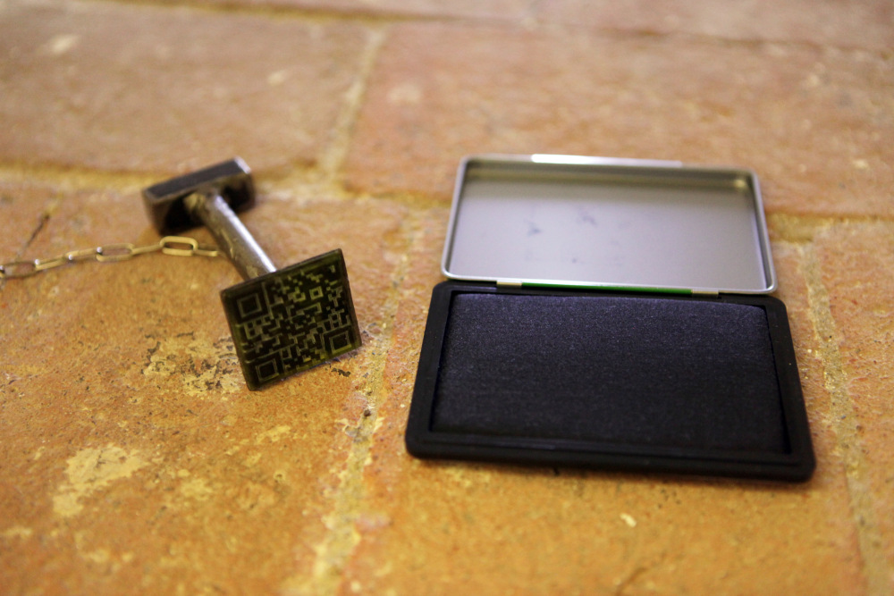

 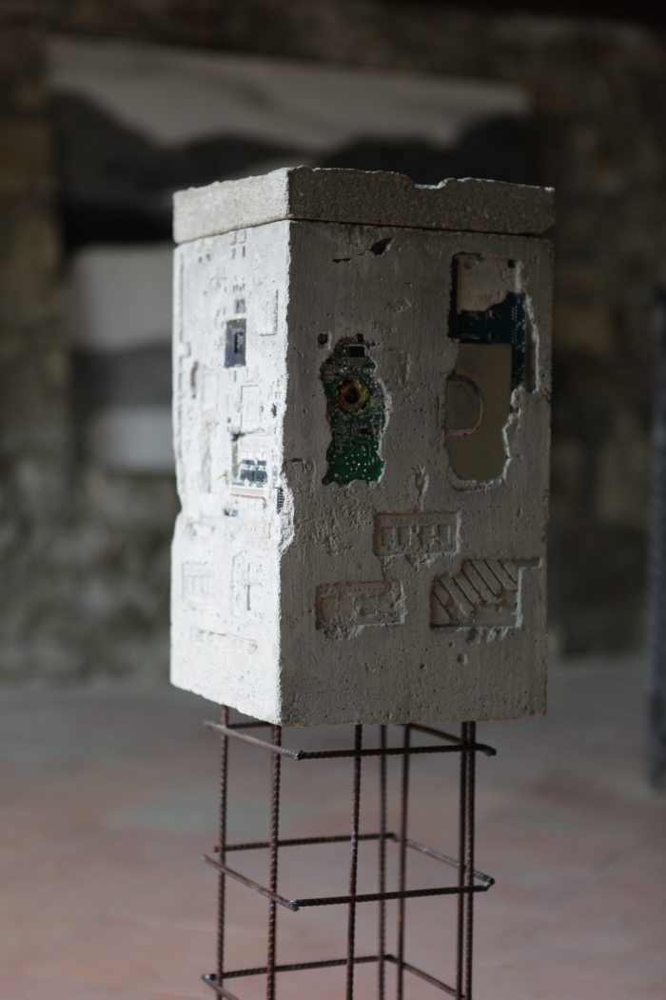
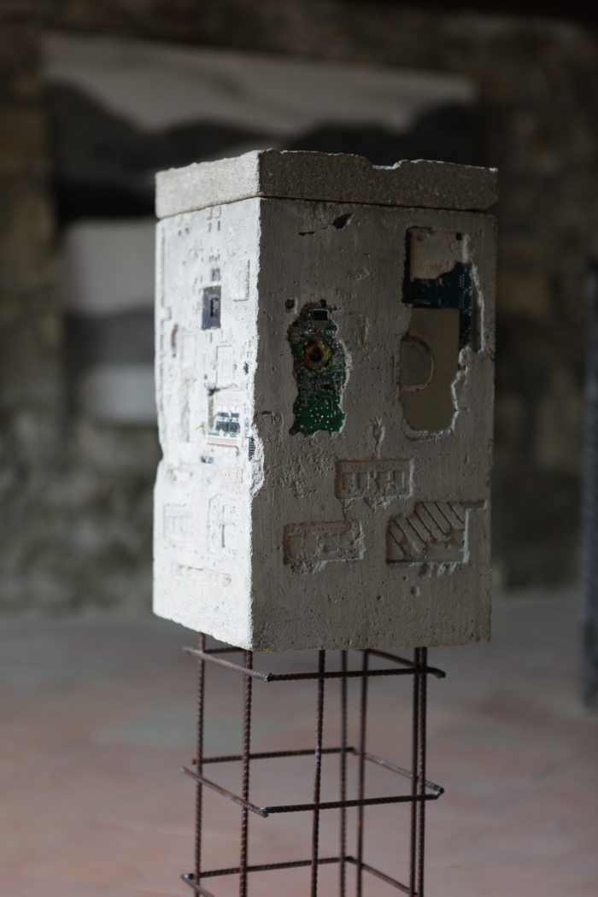
 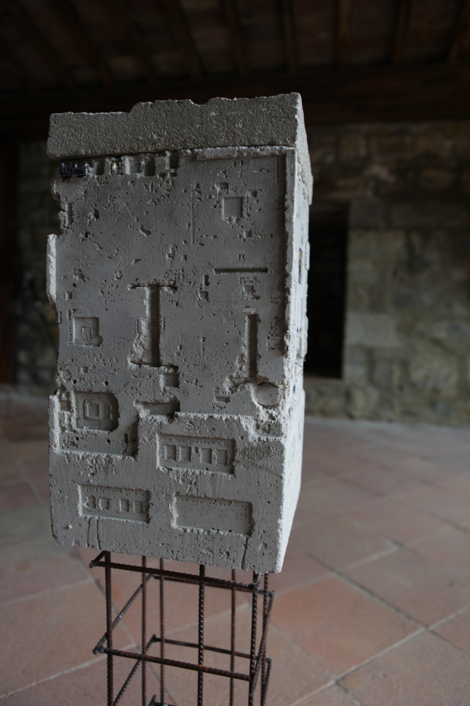
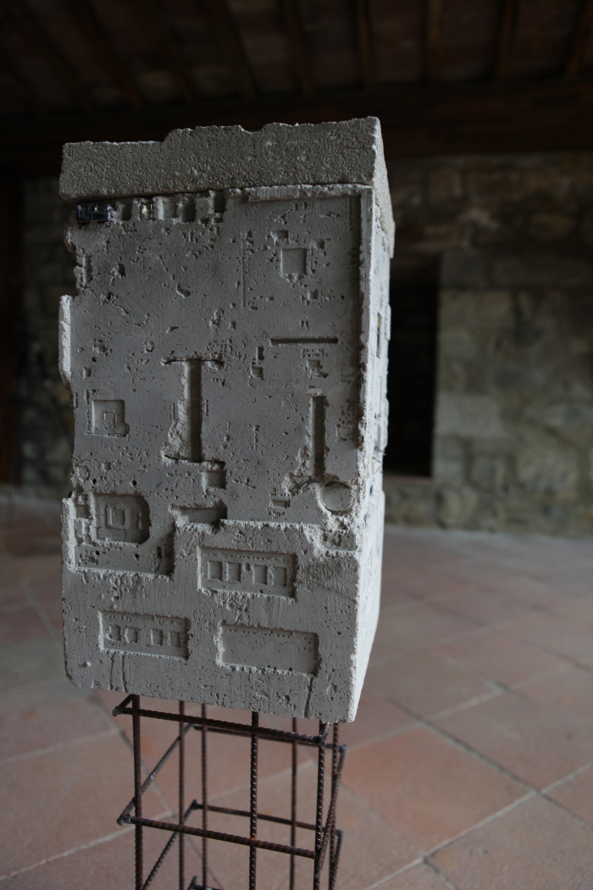
 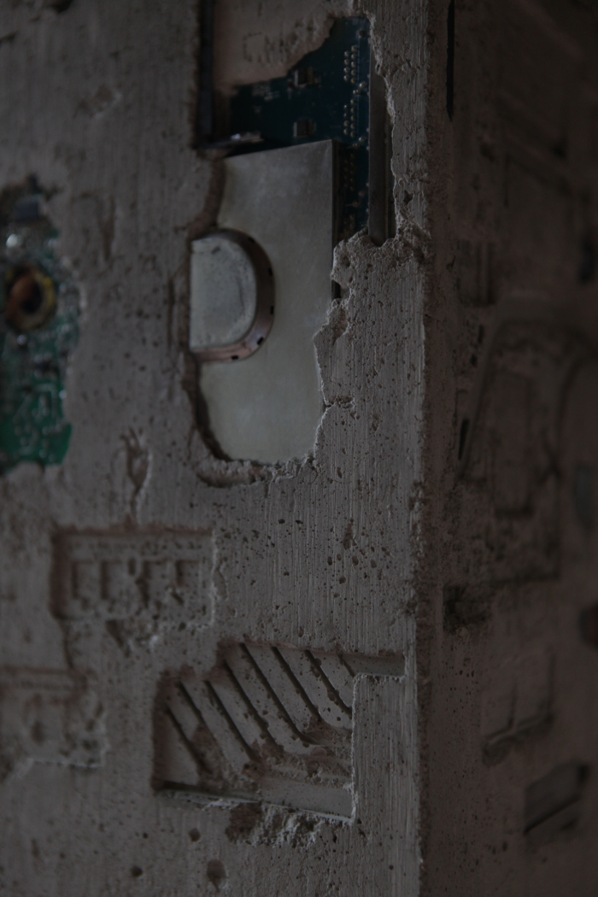
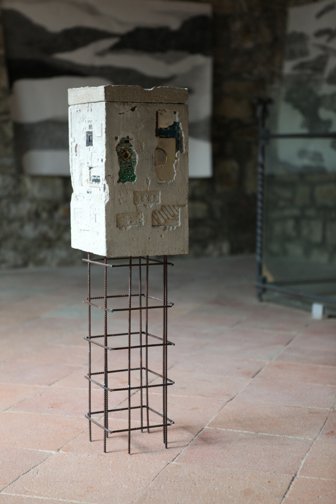
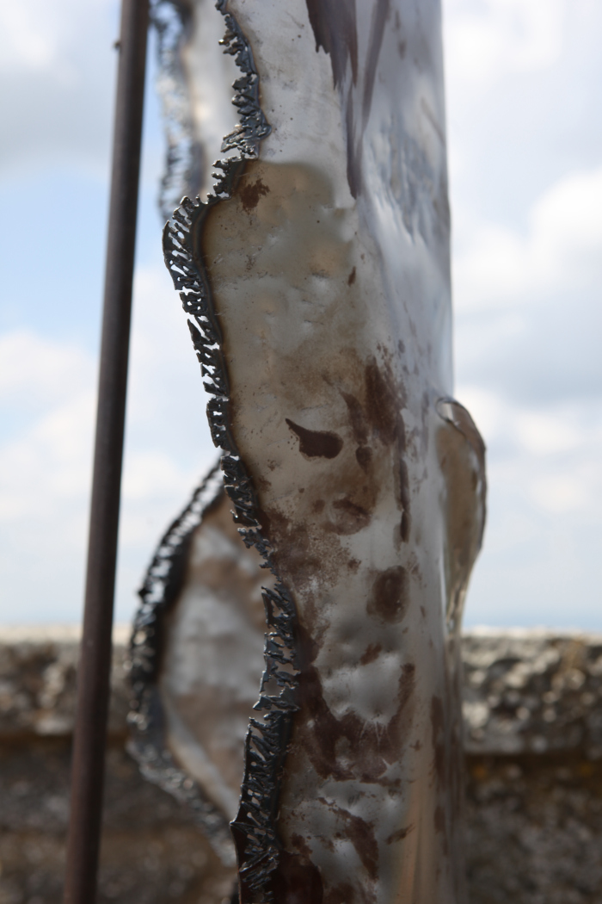
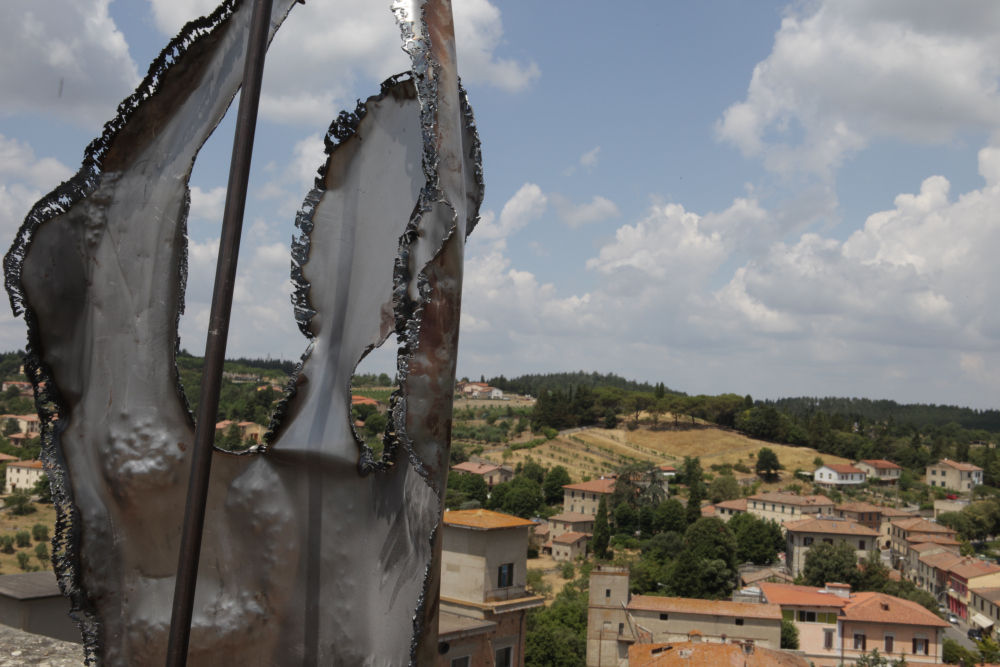
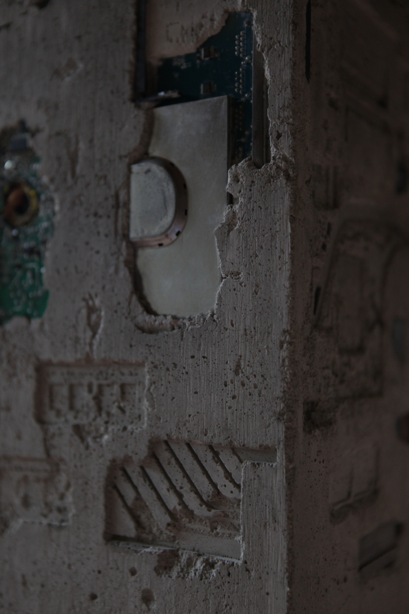
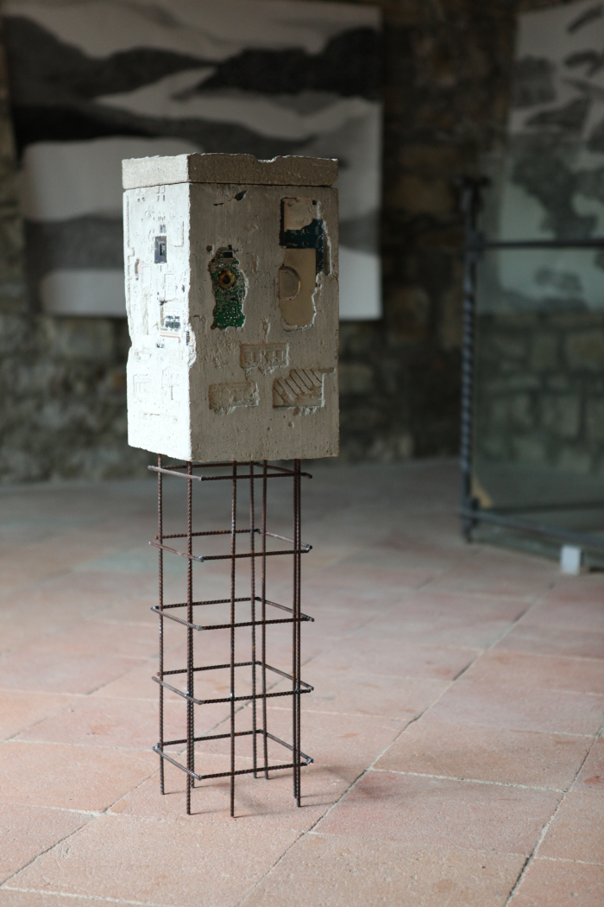
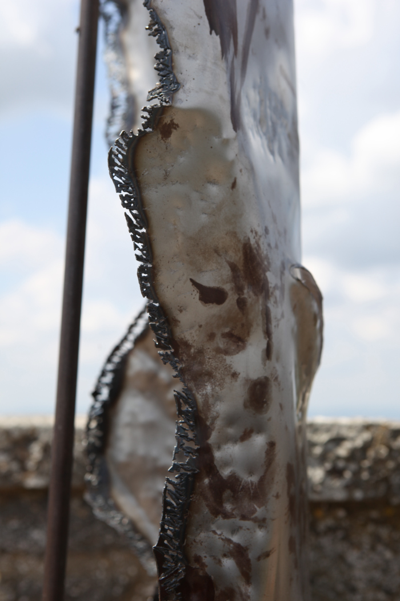
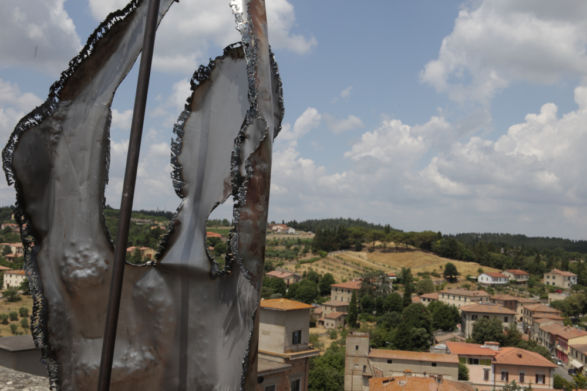